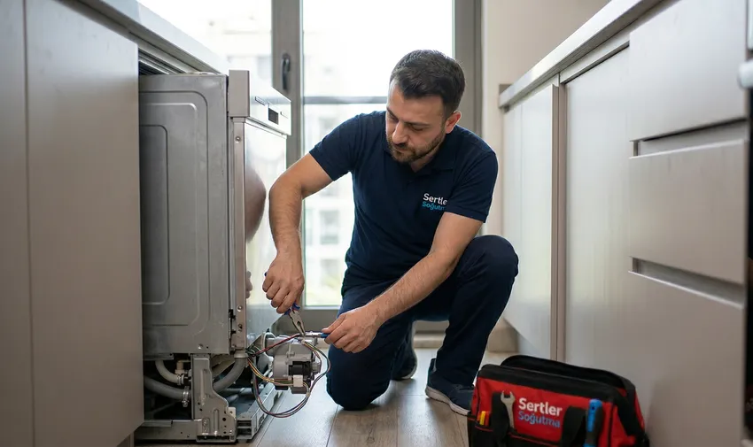
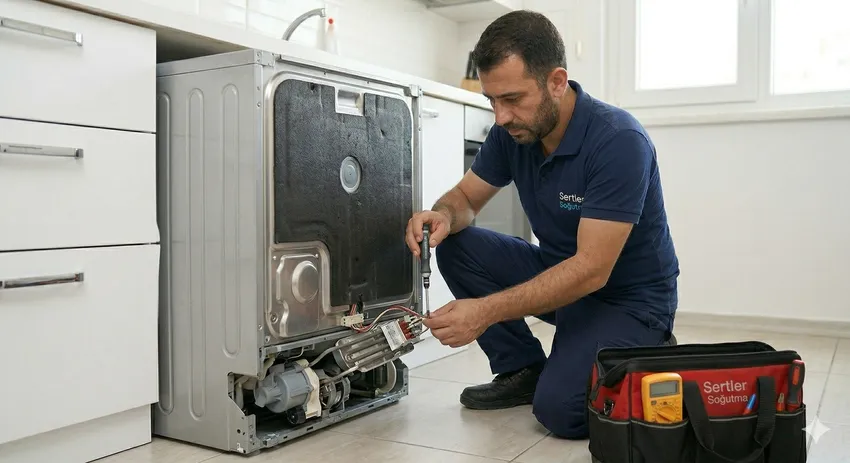
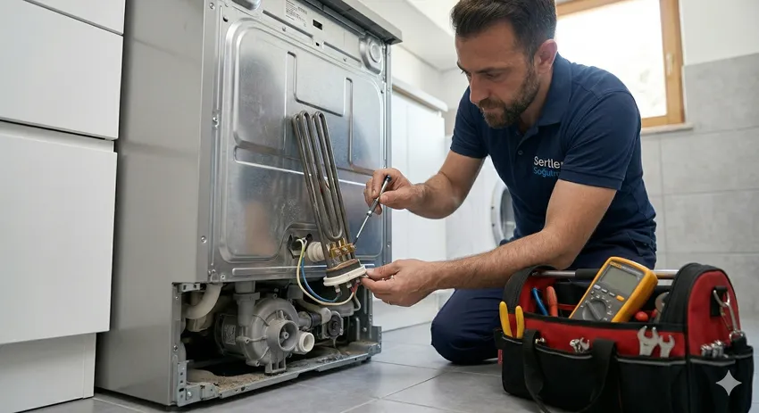

🚿 Su Akıtma Derdine Son: Sertler Soğutma Tarsus Bulaşık Makinesi Tamircisi ile Hızlı ve Kalıcı Onarım!
Evlerimizde mutfak işlerinin yükünü hafifleten, zaman ve su tasarrufu sağlayan bulaşık makineleri, modern yaşamın en kritik yardımcılarından biridir. Ancak yoğun kullanım, kireçli sular ve elektriksel dalgalanmalar gibi dış etkenler, bu hassas cihazların zaman zaman arıza yapmasına neden olabilir. Özellikle Tarsus gibi su sertliğinin yüksek olduğu bölgelerde, makinelerin iç aksamlarında biriken kireç tabakaları sızıntılara, tıkanıklıklara ve performans kayıplarına yol açmaktadır. Mutfak tabanında görülen bir su sızıntısı veya programın ortasında duran bir makine, sadece bir teknik sorun değil, aynı zamanda günlük rutinin aksaması demektir. İşte bu noktada, bölgenin en köklü ve güvenilir ismi olan Sertler Soğutma, profesyonel Tarsus Bulaşık Makinesi Tamircisi hizmetiyle imdadınıza yetişiyor.
Sertler Soğutma olarak bizler, bulaşık makinesi onarımının sadece bir parçayı değiştirmekten ibaret olmadığını biliyoruz. Sunduğumuz Tarsus Bulaşık Makinesi Tamircisi hizmeti, cihazın hidrolik sisteminden elektronik kartına kadar her detayın titizlikle incelenmesini kapsar. Su akıtma problemleri, bulaşıkların kirli çıkması, ısıtma sorunları veya cihazın hiç çalışmaması gibi durumlarda, Tarsus halkına hızlı, kalıcı ve garantili çözümler sunuyoruz. Uzman teknisyenlerimiz, cihazınızın markası ne olursa olsun, en karmaşık arızaları bile yerinde tespit ederek mutfağınızdaki konforu geri kazandırır. Bu kapsamlı rehberde, bulaşık makinesi tamir süreçlerimizi, sık karşılaşılan arıza çözümlerimizi ve Sertler Soğutma farkıyla sunduğumuz ayrıcalıklı hizmetleri derinlemesine inceleyeceğiz.

Tarsus Bulaşık Makinesi Tamircisi Arayanlara Özel
Tarsus'un geniş mahalle ağında güvenilir bir usta bulmak bazen zorlayıcı olabilir. İnternet üzerinde pek çok ilan olsa da, cihazınızı kime emanet ettiğiniz hayati önem taşır. Yanlış yapılan bir müdahale, basit bir su sızıntısını ana kart yanmasına kadar götürebilir. Sertler Soğutma, "Bana en yakın Tarsus Bulaşık Makinesi Tamircisi kim?" sorusuna verilecek en net cevaptır. Biz, sadece bir telefon uzağınızda olan, kurumsal kimliğini kanıtlamış ve Tarsus’un yerel dinamiklerine hakim bir firmayız. Müşterilerimize özel sunduğumuz hizmetlerde, dürüstlük ve şeffaflık en temel ilkelerimizdir.
Arıza durumunda bir Tarsus Bulaşık Makinesi Tamircisi seçerken dikkat etmeniz gereken en önemli husus, firmanın sunduğu teknik donanımdır. Sertler Soğutma, en modern arıza tespit cihazlarıyla adresinize ulaşır. Makinelerin dijital panellerinde görünen karmaşık hata kodlarını saniyeler içinde analiz ederek, sorunun mekanik mi yoksa elektriksel mi olduğunu belirleriz. Tarsus halkının güvenini, sunduğumuz bu profesyonel yaklaşıma ve tamir sonrası verdiğimiz desteğe borçluyuz. Eğer siz de mutfağınızda biriken bulaşıklardan ve su sızıntısı derdinden bir an önce kurtulmak istiyorsanız, bölgenin en deneyimli ekibiyle tanışma vaktiniz gelmiş demektir.
Sertler Soğutma Profesyonel Tamir Teknikleri
Bulaşık makinesi teknolojisi her geçen gün gelişiyor; fırçasız motorlar, dokunmatik paneller ve akıllı sensörler artık her evde mevcut. Bu gelişim, tamir tekniklerinin de aynı hızla modernize edilmesini zorunlu kılıyor. Sertler Soğutma, sunduğu Tarsus Bulaşık Makinesi Tamircisi hizmetinde geleneksel yöntemleri modern mühendislik yaklaşımlarıyla birleştirir. Bir su sızıntısı şikayetiyle gittiğimiz her adreste, sızıntının kaynağını bulmak için cihazı basınç testlerine tabi tutuyoruz. Sadece hortum değiştirmekle yetinmiyor, pompanın debisini ve ventillerin kapanma hızını da ölçüyoruz.
Profesyonel tamir tekniklerimiz arasında, elektronik kartların (beyin) mikro-lehimleme yöntemleriyle onarılması da yer almaktadır. Çoğu Tarsus Bulaşık Makinesi Tamircisi kart arızalandığında doğrudan değişim yoluna giderek yüksek maliyetler çıkarırken, Sertler Soğutma olarak biz, ekonomik onarım seçeneklerini önceliklendiriyoruz. Cihazın içindeki su sirkülasyon sistemini, fıskiyelerin dönüş hızını ve ısıtma elemanlarının direncini tek tek kontrol ederek, makinenin fabrika çıkış ayarlarına dönmesini sağlıyoruz. Teknik ekibimiz, her tamir işleminde "minimum maliyet, maksimum performans" ilkesiyle hareket ederek, bulaşık makinelerinizin ömrünü yıllarca uzatacak müdahalelerde bulunur.
Tarsus’ta Uygun Fiyatlı Tamir Hizmeti
Beyaz eşya tamiri denildiğinde kullanıcıların en büyük çekincesi genellikle yüksek maliyetlerdir. Sertler Soğutma, Tarsus ekonomisini ve kullanıcı bütçesini göz önünde bulundurarak en adil fiyatlandırma politikasını benimsemiştir. Profesyonel bir Tarsus Bulaşık Makinesi Tamircisi olarak amacımız, kaliteli hizmeti her eve ulaştırmaktır. Fiyatlarımızı belirlerken, gereksiz parça değişimlerinden kaçınıyor ve tamiri mümkün olan her bileşeni kurtarmaya çalışıyoruz. Kesin rakam bilgisi vermekten kaçınsak da, piyasa koşullarında Tarsus’un en ulaşılabilir servislerinden biri olduğumuzu gururla belirtiyoruz.
Uygun fiyatlı hizmetimiz, kaliteden ödün verdiğimiz anlamına gelmez. Aksine, Sertler Soğutma, yedek parçaları doğrudan ana tedarikçilerden temin ederek aradaki komisyoncu farkını müşterisine yansıtmaz. Tarsus Bulaşık Makinesi Tamircisi ihtiyacınızda bizden alacağınız teklif, hem işçilik garantisini hem de orijinal parça güvencesini kapsar. Müşterilerimize arıza tespiti sonrası sunulan şeffaf maliyet raporu, onay alınmadan hiçbir işlemin yapılmayacağının taahhüdüdür. Tarsus'un her mahallesinde, dar gelirli ailelerden büyük işletmelere kadar herkese aynı özen ve ekonomik çözümlerle yaklaşıyoruz. Bulaşık makinenizi tamir ettirmek, yeni bir cihaz almaktan çok daha karlı bir yatırım haline dönüşür.
Sertler Soğutma ile Makinenizi Yenileyin
Bazen bir bulaşık makinesi o kadar bakımsız kalır ki, kullanıcılar artık o cihazdan verim alamayacaklarını düşünürler. Ancak Sertler Soğutma, sunduğu kapsamlı revizyon hizmetiyle makinelerinizi adeta yeniden yaratır. Tarsus Bulaşık Makinesi Tamircisi operasyonlarımız kapsamında sadece arıza gidermiyoruz; aynı zamanda iç temizlik, kireçten arındırma ve performans iyileştirme işlemleri uyguluyoruz. Makinenizin iç kazanında biriken yağ ve kireç tabakaları temizlendiğinde, yıkama kalitesindeki farkı ilk kullanımda hissedeceksiniz.
Yenileme sürecinde, eskiyen kapı lastikleri, aşınmış fıskiye kolları ve ömrünü tamamlamış sepet tekerlekleri gibi parçalar orijinal seçeneklerle değiştirilir. Sertler Soğutma, cihazınızın hem estetik hem de fonksiyonel olarak yenilenmesini sağlar. Tarsus bölgesinde ikinci el makine almayı düşünen veya mevcut makinesinden vazgeçen kullanıcılarımıza, profesyonel bir Tarsus Bulaşık Makinesi Tamircisi dokunuşuyla makinelerini kurtarabileceklerini hatırlatıyoruz. Yenilenmiş bir bulaşık makinesi, çok daha az elektrik ve su tüketerek aile bütçenize uzun vadede katkı sağlar. Cihazınızı çöpe atmadan önce mutlaka uzman ekibimizin görüşünü alın; çünkü biz her makinede kurtarılacak bir potansiyel görüyoruz.
Tarsus Bulaşık Makinesi Tamircisi Uzmanlığı
Teknik servis sektörü, sürekli değişen teknolojiye ayak uydurmayı gerektiren dinamik bir alandır. Sertler Soğutma'nın en büyük gücü, personeline verdiği düzenli eğitimlerdir. Bir Tarsus Bulaşık Makinesi Tamircisi uzmanı, sadece elindeki tornavidayla değil, teknik şemaları okuma ve dijital analiz yapma yeteneğiyle tanınır. Arçelik, Beko, Bosch, Siemens, Vestel, Samsung gibi dünya devlerinin tüm bulaşık makinesi modellerine hakim olan ekibimiz, her cihazın kendine has kronik sorunlarını bilir ve buna göre önleyici çözümler geliştirir.
Uzmanlığımız, aynı zamanda müşteri iletişimi ve etik değerleri de kapsar. Adresinize gelen her Sertler Soğutma personeli, sizi arıza hakkında detaylıca bilgilendirir. "Bu parça neden bozuldu?" veya "Bir daha bozulmaması için ne yapmalıyım?" sorularınıza teknik ve anlaşılır cevaplar alırsınız. Tarsus genelinde en çok tavsiye edilen Tarsus Bulaşık Makinesi Tamircisi olmamızın sebebi, teknik yetkinliğimizi güvenilir bir esnaf kültürüyle birleştirmemizdir. Bizim için başarı, sadece bir makineyi çalıştırmak değil, o evden ayrılırken müşterimizin yüzünde oluşan memnuniyet ifadesidir. Uzmanlık, detaylarda gizlidir; biz en küçük somun sıkmasından en karmaşık beyin tamirine kadar her detayı ciddiyetle yönetiyoruz.
Sertler Soğutma Tahliye Pompası Onarımı
Bulaşık makinelerinde en sık karşılaşılan sorunlardan biri suyun tahliye edilememesidir. Program bittiğinde makinenin dibinde biriken kirli su, hem kötü kokulara neden olur hem de cihazın yeni bir programa başlamasını engeller. Tahliye pompası, makinenin içindeki suyu gidere gönderen en kritik mekanik parçadır. Sertler Soğutma, profesyonel Tarsus Bulaşık Makinesi Tamircisi hizmetiyle pompa arızalarına anında müdahale eder. Pompa içine kaçan küçük bir cam kırığı veya yemek artığı, pompanın kanatlarını kilitleyerek motorun yanmasına sebep olabilir.

Tahliye pompası onarımı sürecinde, öncelikle pompa yuvası ve gider hortumları kontrol edilir. Sertler Soğutma teknisyenleri, pompanın elektriksel değerlerini ölçerek parçanın değişmesi mi yoksa temizlenmesi mi gerektiğine karar verir. Bir Tarsus Bulaşık Makinesi Tamircisi olarak biz, orijinal parça değişimlerinde her zaman 1 yıl garanti sunuyoruz. Eğer pompanız sesli çalışıyorsa veya suyu yavaş boşaltıyorsa, bu durum büyük bir arızanın habercisidir. Erken müdahale ile hem ana kartı korur hem de mutfağınızda oluşabilecek su taşma risklerini ortadan kaldırırız. Tarsus'un her bölgesinde, evinizden ayrılmadan tahliye sisteminizi saniyeler içinde eski gücüne kavuşturacak donanıma sahibiz.
Düzenli bakım ve doğru kullanım, arıza riskini azaltır ve cihazın ömrünü uzatır.
Tarsus Bölgesinde Hızlı Parça Tedariği
Beyaz eşya tamirinde en büyük zaman kaybı genellikle parça bekleme sürecinde yaşanır. Sertler Soğutma, Tarsus merkezli geniş yedek parça deposu sayesinde bu sorunu tamamen ortadan kaldırır. "Parça sipariş ettik, haftaya gelir" cümlesini bizimle asla duymazsınız. Profesyonel bir Tarsus Bulaşık Makinesi Tamircisi olarak, en yaygın kullanılan rezistanslar, pompalar, ventiller, sensörler ve elektronik kartlar stoklarımızda her zaman hazır bulunur. Bu sayede, arıza tespiti yapıldığı anda, çoğu zaman aynı gün içerisinde onarım tamamlanmış olur.
Hızlı parça tedariği, sadece hız değil, aynı zamanda uygun maliyet de sağlar. Kendi stoklarımızı yönettiğimiz için, aracı firmaların koyduğu ekstra karları müşterimize yansıtmıyoruz. Sertler Soğutma'nın tam donanımlı mobil servis araçları, içerisinde en kritik yedek parçaları barındıran "yürüyen depolar" gibidir. Tarsus'un en uzak mahallesine bile gitsek, ihtiyacımız olan parça genellikle aracımızda hazırdır. Bu hız ve lojistik güç, bizi Tarsus Bulaşık Makinesi Tamircisi sektöründe rakiplerimizden ayıran en büyük avantajdır. Zamanın çok kıymetli olduğu günümüzde, bulaşık makinenizin günlerce yatmasına izin vermiyoruz.
Sertler Soğutma Yıkama Motoru Tamiri
Yıkama motoru (sirkülasyon pompası), bulaşık makinesinin en pahalı ve en önemli bileşenlerinden biridir. Suyun fıskiyelerden basınçlı bir şekilde püskürtülmesini sağlayarak temizliği gerçekleştiren bu motor, zamanla keçelerden su sızdırabilir veya rulmanları aşınarak yüksek gürültü yapabilir. Sertler Soğutma, uzman Tarsus Bulaşık Makinesi Tamircisi ekibiyle yıkama motoru onarımı konusunda bölgedeki en yetkin firmadır. Motor değişimi çok yüksek maliyetli bir işlem olduğu için, biz öncelikle motorun onarım imkanlarını değerlendiriyoruz.
Yıkama motoru onarımı, yüksek teknik beceri gerektiren bir atölye çalışmasıdır. Keçe değişimi, rulman yenileme ve sargı kontrolleri profesyonel ekipmanlarla yapılır. Sertler Soğutma, tamir edilen her motoru sızdırmazlık ve performans testlerinden geçirmeden teslim etmez. Bir Tarsus Bulaşık Makinesi Tamircisi olarak, müşterilerimize motor arızalarında en ekonomik ve kalıcı yolu sunuyoruz. Eğer makineniz çalışmaya başladığında uğultu yapıyorsa veya fıskiyeler dönmüyorsa, sorun büyük ihtimalle yıkama motorundadır. Bu tür hassas mekanik parçaların tamiri, cihazın genel ömrünü belirleyen en kritik unsurdur ve biz bu konuda Tarsus halkına tam güvence veriyoruz.
Tarsus Bulaşık Makinesi Tamircisi Servis Bölgeleri
Tarsus'un geniş coğrafyası, servis hizmetinin her noktaya eşit hızda ulaşmasını gerektirir. Sertler Soğutma, stratejik olarak konumlanmış mobil ekipleriyle Tarsus'un tüm mahallelerine, köylerine ve çevre beldelerine kesintisiz hizmet sunar. Şehir merkezindeki sıkışık mahallelerden, yeni gelişen bölgelere kadar her sokak bizim hizmet alanımızdır. Profesyonel bir Tarsus Bulaşık Makinesi Tamircisi aradığınızda, konumunuz neresi olursa olsun ekiplerimiz size en kısa sürede ulaşacaktır.
Servis bölgelerimiz arasında sadece konutlar değil, aynı zamanda restoranlar, kafeler ve sosyal tesisler de bulunmaktadır. Sanayi tipi veya ev tipi fark etmeksizin, Tarsus genelindeki her türlü bulaşık makinesi arızası için uzman desteği sağlıyoruz. Sertler Soğutma, her mahalleye özel servis günleri düzenlemek yerine, gelen çağrılara anlık olarak yanıt veren dinamik bir rota yönetim sistemi kullanır. Bu sayede, Tarsus'un neresinde yaşarsanız yaşayın, Tarsus Bulaşık Makinesi Tamircisi ihtiyacınızda en hızlı tepkiyi bizden alırsınız. Adres bulma konusunda uzmanlaşmış ekiplerimiz, navigasyon teknolojilerini kullanarak zaman kaybetmeden kapınızda olur.
Sertler Soğutma Arıza Kodları Analizi
Modern bulaşık makineleri, içlerindeki bir sorun algılandığında dijital ekranda E01, E02, F5 gibi çeşitli hata kodları gösterirler. Bu kodlar aslında makinenin size neresinin ağrıdığını söyleme şeklidir. Ancak her markanın kod dili farklıdır. Sertler Soğutma teknisyenleri, tüm markaların gizli servis menülerine ve arıza kodlarına hakimdir. Bir Tarsus Bulaşık Makinesi Tamircisi olarak biz, telefonda bize ilettiğiniz hata kodu üzerinden bile arızanın %80 oranında ne olduğunu tahmin edebilir ve hazırlıklı gelebiliriz.
Arıza kodları analizi, gereksiz sökme takma işlemlerinin önüne geçer. Örneğin, su giriş hatası veren bir makinede doğrudan ventile odaklanarak zaman kazanırız. Sertler Soğutma, teknolojik altyapısı sayesinde bu kodların sadece silinmesini değil, kodun oluşmasına sebep olan asıl sorunun kökten çözülmesini sağlar. Bazen basit bir voltaj düşüklüğü makineyi kilitlerken, bazen de ciddi bir sızıntı sensörü hata koduyla kullanıcıyı uyarır. Tarsus genelindeki evlerde karşılaştığımız yüzlerce farklı hata kodu vakası, bize her modelde benzersiz bir tecrübe kazandırmıştır. Eğer makinenizin ekranında anlam veremediğiniz bir yazı çıkıyorsa, profesyonel bir Tarsus Bulaşık Makinesi Tamircisi olarak bizi arayıp destek alabilirsiniz.
Program İptali ve Resetleme Desteği
Bazen bulaşık makineleri yazılımsal olarak kilitlenebilir veya programın ortasında takılı kalabilir. Bu durum her zaman donanımsal bir arıza anlamına gelmez; bazen bir elektrik kesintisi veya yanlış tuş kombinasyonu makinenin "akıl karışıklığına" neden olabilir. Sertler Soğutma, müşterilerine telefon üzerinden veya yerinde "program resetleme" desteği sunarak büyük dert gibi görünen küçük sorunları hızla çözer. Bir Tarsus Bulaşık Makinesi Tamircisi olarak, cihazın hafızasını sıfırlamayı ve sistemi yeniden başlatmayı profesyonelce gerçekleştiriyoruz.
Program iptal edilemediğinde veya makine sürekli su boşaltmaya devam ettiğinde (su taşma emniyeti devredeyken), basit bir resetleme işlemi sorunu çözmeyebilir. Bu durumlarda Sertler Soğutma teknisyenleri, cihazın alt tabanındaki sensörleri kontrol eder. Eğer bir sızıntı varsa, makine güvenlik amacıyla kendini kilitler. Profesyonel bir Tarsus Bulaşık Makinesi Tamircisi müdahalesi olmadan bu kilitleri açmaya çalışmak, suyun mutfak zeminine taşmasına neden olabilir. Biz, hem yazılımsal hem de donanım odaklı resetleme işlemlerini yaparak, makinenizi güvenli bir şekilde normal çalışma düzenine geri döndürüyoruz. Tarsus halkına sunduğumuz bu teknik rehberlik, pek çok gereksiz servis ziyaretinin ve masrafın önüne geçmektedir.
Sertler Soğutma Garanti Bildirimi
Bir tamir firmasının kendisine duyduğu güvenin en büyük kanıtı, yaptığı işe verdiği garantidir. Sertler Soğutma, Tarsus'taki tüm bulaşık makinesi onarımlarında müşterilerine resmi bir garanti bildirimi sunar. Değiştirdiğimiz her yedek parça ve sunduğumuz her işçilik kalemi, firmamızın güvencesi altındadır. Tarsus Bulaşık Makinesi Tamircisi olarak verdiğimiz servis formları, yasal birer belge niteliğindedir. Bu formlarda yapılan işlemin detayları, değişen parçanın seri numarası ve garanti süresi açıkça belirtilir.
Garanti bildirimimiz, "iş bitti, her şey bitti" anlayışını tamamen ortadan kaldırır. Eğer onarılan bir parça belirtilen süre içinde tekrar arızalanırsa, Sertler Soğutma olarak bu sorunu hiçbir ek ücret talep etmeden, öncelikli olarak gideriyoruz. Tarsus'ta kurumsal bir hizmet almanın rahatlığı budur; karşınızda her zaman muhatap bulabilir ve hakkınızı arayabilirsiniz. Bizim için her tamir, markamızın itibarıdır. Bu yüzden, garantili hizmetimizi sadece bir söz olarak değil, yazılı bir taahhüt olarak her müşterimize teslim ediyoruz. Kaliteli bir Tarsus Bulaşık Makinesi Tamircisi ile çalışmanın huzuru, cihazınızın uzun süre sorun çıkarmayacağını bilmektir. Sertler Soğutma ile bulaşık makineleriniz her zaman koruma altındadır.
Hemen Servis Talebinde Bulunun
Arıza tespiti, bakım veya onarım için aynı gün içinde servis yönlendirebiliriz.
Sıkça Sorulan Sorular
Firmamız, Tarsus genelinde Arçelik, Beko, Vestel, Bosch, Siemens, Samsung, LG, Profilo, Altus ve Regal başta olmak üzere piyasadaki tüm markaların tamirini gerçekleştiren yetkin bir Tarsus Bulaşık Makinesi Tamircisi firmasıdır.
Evet, elektrik ve suyun birleştiği her sızıntı ciddi bir tehlike oluşturur. Cihazın fişini hemen çekin ve su giriş vanasını kapatın. Ardından profesyonel bir Tarsus Bulaşık Makinesi Tamircisi olan Sertler Soğutma'yı arayarak teknik destek isteyin.
Genellikle arızaların büyük çoğunluğu (pompa, rezistans, ventil, sensör değişimleri ve resetleme işlemleri) müşterimizin evinde gerçekleştirilir. Ancak ağır mekanik onarımlar veya elektronik kart testleri için cihaz atölyemize alınabilir.
Bize web sitemizdeki iletişim numaralarından, WhatsApp hattımızdan veya sosyal medya hesaplarımızdan 7/24 ulaşabilirsiniz. Tarsus'un en hızlı yanıt veren Tarsus Bulaşık Makinesi Tamircisi ekibi olarak çağrınızı bekliyoruz.
Stoklu çalıştığımız ve yaygın servis ağına sahip olduğumuz için çoğu tamir işlemi aynı gün içerisinde, ortalama 1-2 saatlik bir çalışma ile tamamlanmaktadır.
Müşterilerimize ödeme kolaylığı sağlıyoruz. Kapıda nakit ödeme veya kredi kartı ile güvenli ödeme seçeneklerimiz mevcuttur. Tüm ödemeler karşılığında Tarsus Bulaşık Makinesi Tamircisi servis fişiniz düzenlenir.
Evet, cihazın yaşı ne olursa olsun, yedek parçası temin edilebildiği sürece her türlü bulaşık makinesinin onarımını yapıyoruz.
Bu durum kireçlenme, fıskiye tıkanıklığı veya yıkama motorunun basınç kaybından kaynaklanabilir. Sertler Soğutma uzmanları yerinde inceleme yaparak sorunu kökten çözebilir.
Tarsus'un her bölgesinde aktif mobil araçlarımız olduğu için genellikle çağrınızdan sonraki birkaç saat içinde, en geç aynı gün içerisinde adresinizde oluyoruz.
Sadece tamir değil, makinenizin ömrünü uzatacak profesyonel bakım ve iç temizlik hizmetleri de sunuyoruz. Düzenli bakım, gelecekteki Tarsus Bulaşık Makinesi Tamircisi ihtiyacınızı azaltır.
Sertler Soğutma, Tarsus'ta teknik servisin güvenilir, hızlı ve dürüst adresi olarak mutfaklarınızdaki en büyük yardımcınızdır. Bulaşık makinelerinizdeki su sızıntılarına, gürültülü çalışmaya ve her türlü teknik arızaya son vermek için profesyonel ekibimizle her zaman hazırız. Kaliteli işçilik, orijinal yedek parça ve müşteri memnuniyeti odaklı hizmet anlayışımızla, makineleriniz ilk günkü verimiyle çalışacak. Tarsus'un en iyi Tarsus Bulaşık Makinesi Tamircisi hizmetini almak ve bulaşıklarınızın pırıl pırıl çıkmasını sağlamak için hemen bizimle iletişime geçin. Konforunuzu riske atmayın, işi uzmanına bırakın!